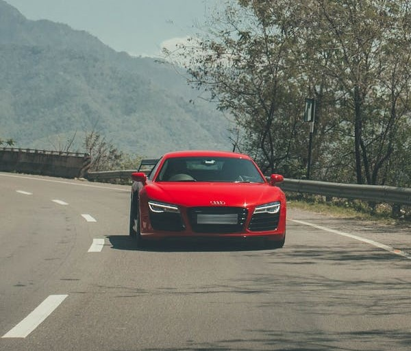

Audi R8 V10
O Audi R8 V10 é a definição de um superesportivo equilibrado, unindo potência bruta e refinamento alemão. Equipado com um motor V10 aspirado de 5.2 litros, ele entrega até 620 cavalos de potência, acelerando de 0 a 100 km/h em apenas 3,1 segundos.
Com tração integral quattro e câmbio S tronic de dupla embreagem, o R8 oferece dirigibilidade precisa e respostas rápidas, seja nas ruas ou nas pistas. Seu design é agressivo e elegante, marcado por linhas afiadas, entradas de ar imponentes e faróis em LED.
O interior combina esportividade e luxo, com acabamentos premium, painel digital totalmente configurável e bancos envolventes em couro. O ronco do V10 é puro espetáculo — visceral, metálico e inconfundível.
Mais do que desempenho, o Audi R8 V10 entrega emoção pura, sendo um dos últimos superesportivos com motor aspirado, mantendo viva a essência da condução esportiva.